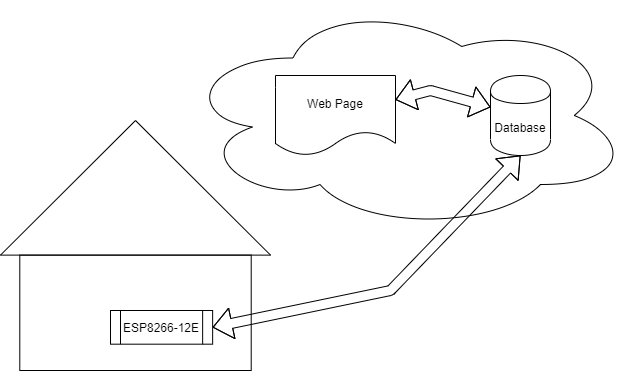
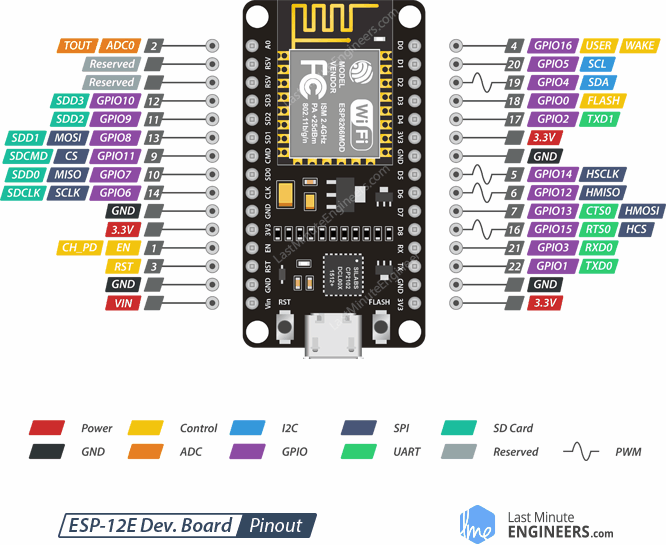

Overview
The ESP8266-12E is a breadboard friendly microcontroller with a fully integrated TCP/IP stack for WiFi communication. For IoT projects constructed around these microcontrollers I developed a "starting-place" website and database which I was happy to share with the open-source community. Obviously this "starting-place" requires customization for a particular project, or at the least could really use it. This site documents the web page features, javascript/AJAX functions, and php scripts used to aid people when customizing a copy of the files to fit their own particular needs.
IoT Control

A MySQL (MariaDB) database does most of the work by keeping track of the state each control pin should be in, along with sensor data returned from the microcontroller. The webpage accesses php scripts to update the state values in the database via buttons or text-commands, and displays the values currently stored in the database. The microcontroller routinely accesses the php scripts to query the database with updated sensor data or retreive the state values the control pins should be in, and adjusts the controls accordingly.
Microcontroller
When programming an ESP8266-12E I typically use the Arduino IDE, the pins are accessed either through the ID printed on the silkscreen on the PCB (goes with DevBoard), the integer value in the GPIO name (goes with bootloader), or when available the connection number (goes with chip -not referenced in database here).
The following pinout diagram shows the board model I have been using at the time of creating this documentation, please note this is not the only model of ESP8266-12E NodeMCU DevBoard.
